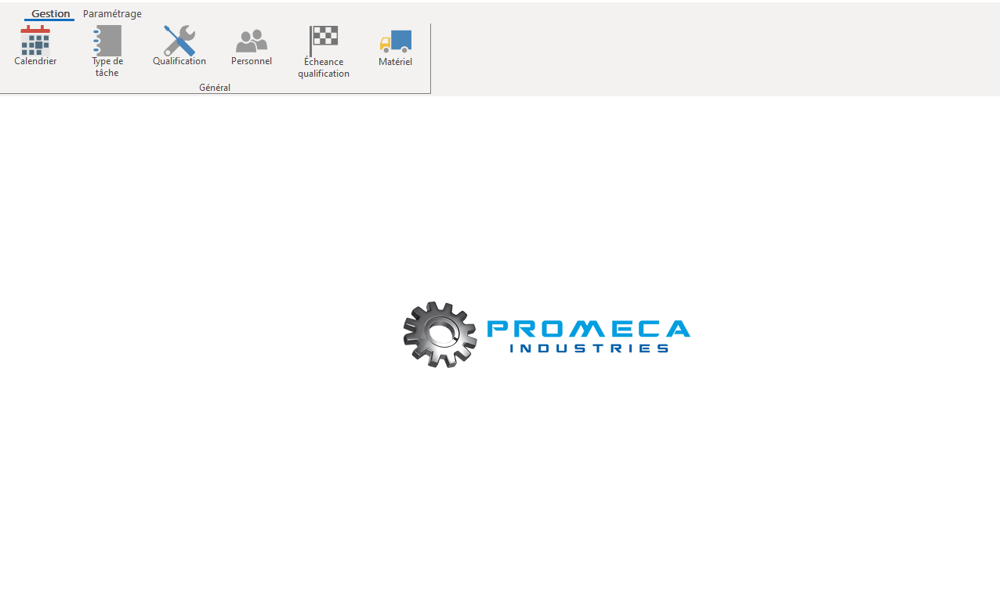
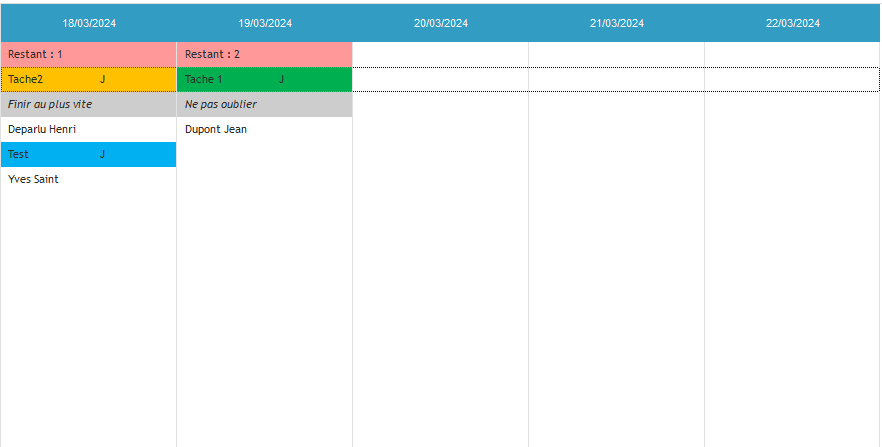
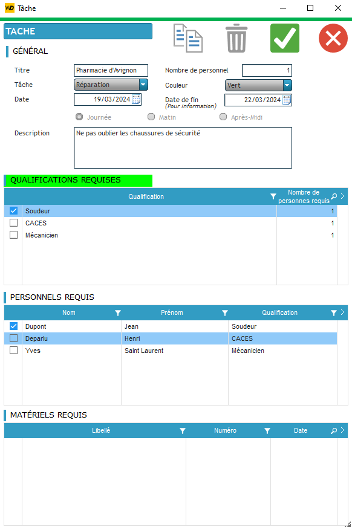

Promeca Industries
Présentation de l'entreprise
Promeca Industries est une société spécialisée dans la chaudronnerie, la serrurerie, la tuyauterie, la
métallurgie et la maintenance industrielle.
L'entreprise est située à Bédarrides, dans le Vaucluse (84), et intervient dans toute la France.
Promeca Industries propose une large gamme de services à ses clients, notamment :
- Études et conception de projets
- Fabrication de pièces métalliques
- Montage et installation d'équipements
- Maintenance et réparation
- Dépannage
Objectif
L'objectif est de créer un logiciel qui permet au client de pouvoir organiser et gérer les interventions de ses techniciens sur le terrain. Le logiciel doit permettre de :
- Planifier les interventions
- Assigner les techniciens aux missions
- Assigner les véhicules et les outils aux missions
- Gérer les congés, les arrêts maladie et autres absences
- Connaître les qualifications de chaque technicien et leurs dates d'expiration
Menu principal
Dans le menu le client peut accéder :
- Calendrier : Permet de visualiser les interventions sous forme de planning
- Type de tâche : Création, modification et suppression de plusieurs types de tâches (exemples : installation d'équipement, réparation, etc.)
- qualifications : Permet de consulter les qualifications dont l'entreprise a besoin et le nombre de techniciens possédant chaque qualification
- Personnel : Permet de consulter la liste du personnel avec les qualifications de chacun et leurs dates de fin de validité
- Écheance qualification : Affiche une liste des personnels dont les qualifications sont arrivées à terme ou qui vont bientôt expirer
- Matériel : Permet d'enregistrer tous les véhicules et outils

Calendrier
Le calendrier permet de visualiser les interventions sous forme de planning. Les interventions sont représentées par des tâches de différentes couleurs.

Planifier les interventions
Pour planifier une intervention, le client doit sélectionner une date et un type de tâche. Il peut également ajouter des informations supplémentaires, les techniciens et les véhicules assignés à la mission.
